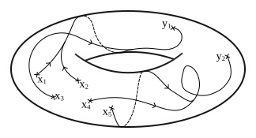

Factorization Algebras on Stratified Spaces
Abstract
Factorization algebras were developed to describe the algebraic structure on the space of local operators in perturbative field theories, inherited from homotopy-theoretic information of the underlying manifold and its tangent bundle. We give a relatively self-contained introduction to their definition, their construction from physical theories, and the necessary mathematical preliminaries involving higher category theory. Thereafter, we generalize our background spaces from manifolds to a large class of stratified spaces, including for example manifolds with corners, conifolds and complex varieties. Topological field theories are in this case described by constructible factorization algebras, which we extract in several exemplary cases by considering their BV-BRST complex as a constructible sheaf. Finally, we generalize our approach by defining BV data endowed with local (−1)-shifted symplectic structures on simplicial complexes, regular CW complexes, PL spaces and pseudomanifolds to which we can associate such algebras.
Master Thesis: Constructible Factorization Algebras for Field Theories (pdf, 1.912kB)
A short introduction to (constructible) factorization algebras, and a summary of the above-mentioned new applications for simplicial BV-theories, is also contained in the following slides:
Seminar Slides: Constructible Factorization Algebras for Field Theories (pdf, 463kB)
